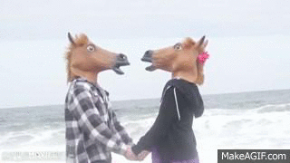

And how they flirt
During the mating season king penguins “flirt” with potential partners by closing their eyes, stretching their heads skyward and moving them in a half-circle to "take peeks" at one another. During courtship, a male penguin will find the smoothest pebble to give to a female as a gift. If she likes the offering, she'll place it in the nest and the two will continue building up their little pebble mound in preparation for the eggs. So cute right?
We know how sweet horses can be but did you know that in order to attract a mate, the female horse urinates, raising her tail and revealing her vulva...? Well I just found out, ha! This innate behaviour stimulates the mares secretion and the stallions erection. If both the mare and stallion are satisfied with each other, he will start the performance... So, yes, sweet that he checks if both are satisfied before using his sword, right?
Dogs are cute, we love them, we think they are innocent but... A male dog knows when it's time to mate, and if that happens he will sniff the female's vulva. If she is receptive she will pull her tail to one side which is known as 'flagging'. Then the male will perform... So at least she will give a sign right? But not always, a male dog can be less politically correct and just perform without asking. Like some homo sapiens, aha!
Birds can be really dramatic when it comes to flirting. Usually the dude does all the job (yes sorry guys)!
Some male birds perform special displays to attract a partner. Birds of paradise,
from Papua New Guinea, dangle from a branch, shaking their dazzling feathers.
Peregrines tumble acrobatically through the sky.
The intricate moves of a mating dance and the charming
songs used to woo partners can help distinguish species so birds are sure to choose genetically compatible mates.
Imagine a sparrow singing and a horny chicken running all the way from the farm to make it happen!
For brown bears, doing the boogie is all about getting a bit of attention. They looove dancing! They also rub their thick fur against a tree so they can mark a scent area, leaving their calling card for other bears. Mhmmm.... instead of a phone number they leave a scent, sexy right?
They can be cold, they can be picky but they know how to show affection.
They do this rubbing their heads against each other and along the sides of their bodies.
Sometimes cats may even hook their tails and rub them together.
The female cat at some point of the flirting process will meow loudly and frequently in an attempt to attract a macho boy.
The queen may try and bite the tom to keep him away if he performs without her being ready!
So better to flirt for longer rather that rush and end with a scratch in the face right?